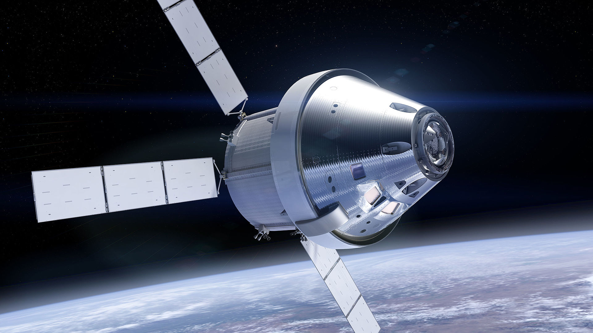

Di nuovo sulla Luna
Il programma Artemis è un programma di volo spaziale con l'obiettivo di far sbarcare "la prima donna e il prossimo uomo" sulla Luna entro il 2024. Questo sarà possibile grazie allo Space Launch System, la più moderna piattaforma di lancio spaziale di NASA, che porterà il modulo lunare Orion fino in orbita.
